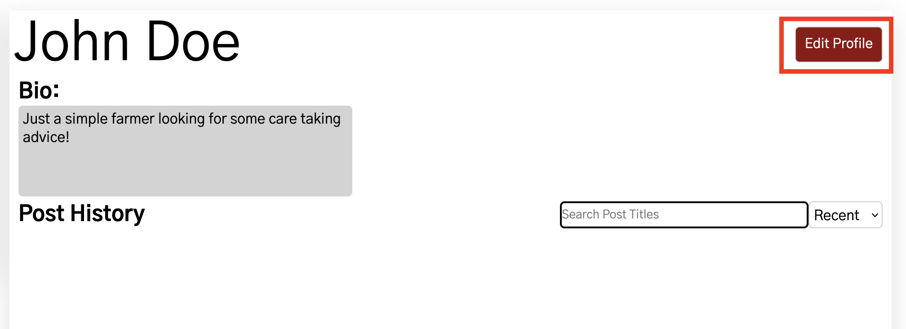
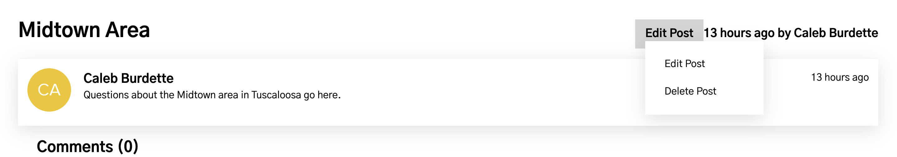

Link to Our GitHub Repository
Installation
Install NodeJS.
Clone the repo.
Run npm install in the root directory as well as the ./client folder.
Credentials
You need to obtain a number (8) of credentials from the team (MongoDB,
Auth0).
Create a .env file in the root directory to store your credentials.
After obtaining the credentials and relevant values, enter them in the
.env in the following format separated by newlines:
<FIELD_NAME> : "<VALUE>", for example, MONGODB_USERNAME:
"myusername"
External Resources
EmailJS - We use the free version, more information on tiered pricing here:
EmailJS Pricing
Auth0 - We use the free version, more information on tiered pricing here: Auth0 Pricing
MongoDB Atlas - We use the free version, more information on tiered pricing here: MongoDB Atlas Pricing
Running the App
Server and client must be running simultaneously, for this you need two
terminals running.
1. Server: In one terminal window, cd into the /server folder and run npm
start to start the server.
2. Client: In another terminal window, cd into the /client folder and run
npm start to start the client.
3. Visit localhost:3000 to see the client in action.
Running the App Using Docker Container
Run docker compose up --force-recreate --build
Since we are mainly running locally, make sure any instance of localhost:3001 is replaced with backend:3001 when using docker.
Upon landing on our page, users are presented with a welcome message asking them to log in to view posts. To do this, navigate to the top right of the navbar, hover over the 'MY ACCCOUNT' item which will reveal a dropdown menu. Click on 'Log In'.

(Clicking directly on 'MY ACCOUNT' or attempting to interact with a post will also redirect to the login page.)
This will redirect you to the Auth0 login page where you can either log in with an existing account or create a new one. Clicking on "Sign Up" will take you to the registration page where you can create a new account.

After logging in, you will be redirected to the edit profile page where you will be asked to give yourself a first name, last name, and a bio.
After saving your profile changes, you will be directed to your profile page. To return to the home page, click on either 'HOME' in the navbar or the 'Senior Forum' logo.
You can return to your profile page at any time by clicking on 'MY ACCOUNT'. To edit your profile, go to your profile page and click on 'Edit Profile'. Here you can change your first name, last name, and bio. Click 'Save' to save your changes. A user cannot leave their first name or last name blank, however, they may leave their bio blank if they do not wish to have one.
If you wish to change your password, you can do so by hovering over 'MY ACCOUNT' and clicking 'Account Settings'. This will take you to the account settings page where you can change your password. Click the change password button to have an email sent with a reset link.

To log out, hover over 'MY ACCOUNT' and then 'Log Out'. This will log you out of the site and redirect you to the home page.
Once logged in, users start out on the home page where all posts are displayed. Users can browse through the posts and click on a post to view it.

Above the posts, there is a search bar and a dropdown menu that sorts the posts based off of a category. The search bar for this page looks for a specific user's name. The only sorting categories are "Recent", "Oldest", and "Popular". Recent and Oldest are based off of when the post was made, while Popular is based off of the number of comments on the post.

When a user creates a post, they can select categories that the post falls under.
These categories are displayed on the post and can be clicked on to filter the posts based on that category.
There is also a "Categories" tab on the Navbar that users can click to go to the Categories page. This page lists all the categories that have been created and show the number of posts associated with it.

When clicking a specific category on either a post or on the Categories page, the user is redirected to that specific category page.
This page shows all the posts that are associated with that category.
On these pages you can search the title of a post and sort the posts by "Recent", "Oldest", and "Popular", similar to the home page.
Similar to the Category Pages, on the Account page you can search for a specific post by title and sort the posts by "Recent", "Oldest", and "Popular".
This works for both your account and other user's profile page.
Once logged in, users can create a post by clicking on the 'Create Post' button located at the top right of the navbar.
Then you will be directed to the 'Add Post' page where you can enter the title, content, and select a category for your post.

If you exceed the character limit for the title or content, the text field will turn red, and you will be unable to submit the post. If you also do not add any text in the title or content fields, the box will turn red and also indicate you need to fill out the field.

Once the title and content fields have been filled out and you have selected the categories to include on your post, you can click the 'Add Post' button to create the post. You will be redirected to the home page where you can see your post.

To edit a post, go to the account page and, if needed, search for the desired post title and click on that post. This will bring you to the single post page. Here you can hover over the "Edit Post" dropdown and click the "Edit Post" button.
This will redirect you to the 'Edit Post' page where you can edit the title, content, and categories of the post. This page has the same layout as the 'Add Post' page, and has the same character checks as well.
Once you have made the desired changes, click the 'Edit Post' button to save the changes. You will be redirected to the single post page where you can see the updated post.

To delete a post, go to the account page and, if needed, search for the desired post title and click on that post. This will bring you to the single post page. Here you can hover over the "Edit Post" dropdown and click the "Delete Post" button.
This will show a popup asking you to confirm the deletion of the post. Click the green button titled 'Yes, delete this post'. This will remove the post and redirect you to your account page.
After clicking in a post, you can scroll down to the comments section. Here you can see all the comments that have been made on the post. A user can add their own comment by interacting with the comment box. After they write their comment, they can click the 'Add Comment' button to submit their comment.
After the comment has been submitted, it can be edited by clicking on "Edit comment". This will bring up a text box where the user can edit their comment. Clicking on "Edit comment" will save the changes, or clicking on "Cancel" will discard the changes.
As an admin, there are a few additional features available to you. An extra item will appear on the navbar called 'ADMIN'. Clicking on this will take you to the admin page.
On the admin page, you can see all users on the site. It will display their first name, last name, email, and profile picture. Clicking on their name will take you to their profile. There is also a button for banning a user. This will restrict their abilities on the site. They won't be able to post or comment, but can still view posts.
As an admin, you also have the ability to edit or delete any user's post or comment. This can be done by visiting the post and hovering over the 'Edit post' button. This will reveal a dropdown menu with the options to edit or delete the post. The same can be done for comments by clicking on 'Edit comment'.
SeniorForum comprises a forum client and a server. The client contains all the front-end code which was built with React, and the server utilizes Express to talk to our MongoDB collection in order to provide information to the client for it to display on the web browser.
SeniorForum uses the React framework to represent items on the page as reusable "components". A component essentially is a template for a particular element of the page. Components may be nested within one another, creating a tree of UI elements. For example, the "Home" component represents the home page, it renders the "Navbar" and "Footer" components at the top and bottom of the page respectively, and a "PostList" component in between. The "PostList" component itself then contains a number of "PostOverview" components.
React components may obtain data from a number of ways. Traditionally, data is passed into components as "props", much like parameters to a function. Therefore, it would make sense to have the "source of data" somewhere high up in the tree so it may be passed down to components that need them. In a very simple React app, this would not pose much of an issue, but in a more complex app such as SeniorForum, it would be difficult to maintain and keep track of data flow up/down components.
To mitigate this issue, we introduced the state management library, Redux. Redux gives our app a constant source of truth without having to worry about passing in props down a multitude of unrelated components. There is a "store" that contains crucial information obtained at various points of the app flow. Components can then use user-defined "selectors" to obtain this data from the store at any point.
To make changes to our project, follow the install processes described in the How To Run section of the Source Code. Use GitHub to access our current code of our project. To access our database, there are exported JSON files which contain our database contents in the GitHub. To make changes, we recommend using Webstorm. We found editing the GitHub through Webstorm was most efficient.
To make changes to our project, you will need to know the location of files. Below is an explanation of our project directory.
SeniorForum
.github
pull_request_template.md --> This is where you can change the default pull request.
client
public --> This folder contains items used for the creation of the React web app.
src
app
store.js --> Contains Redux store configuration
components
categories --> Contains components related to categories.
forms --> Contains the comment form and input validation for comments.
navbar --> Contains the navbar set up and checks if user is an admin for the extra navbar item.
posts --> Contains the post list where pagination is implemented and single post page where users can delete posts.
userInfo --> Contains the files for user images on the home page.
users --> Contains component related to users.
Error.js
Footer.js
Spinner.js
features --> Contains Redux slice and asynchronous thunks for entities
comments --> Comments slice and thunks
posts --> Posts slice and thunks
users --> Users slice and thunks
images --> This folder stores photos such as the photo in the about page.
pages --> This folder holds the pages of our project including about and account.
styles --> This folder holds the CSS files for the pages. If you want to change the styling of a page, go to the style folder and select the CSS file matching the page you want to change.
utility
categoryImages --> This folder holds the images for the categories page. If you wanted to replace any of the category images, you would put it in this file.
App.js --> Component for app
constants.js --> Contains constants to avoid hard-coded values.
index.js --> Starting point for our client front-end.
.dockerignore --> Use this file to edit the docker containers.
.gitignore
Dockerfile --> Use this file to edit the docker containers.
package.json --> Contains client dependencies.
package-lock.json --> Contains transitive dependencies.
README.md
database --> This includes an image of our database from MongoDB Atlas
docs --> This includes all the files for our documentation and team website.
server
controllers --> Contains logic for the server routes.
models --> Contains MongoDB models for our entities.
routes --> Contains the routes for our controllers.
index.js --> Starting point for our server.
.dockerignore --> Use this file to edit the docker containers.
.env --> This files contains mongo username, mongo password, and Auth0 credentials.
.gitignore
docker-compose.yml --> Use this file to edit the docker containers.
Dockerfile --> Use this file to edit the docker containers.
package.json --> Contains project dependencies.
package-lock.json --> Contains transitive dependencies.
README.md
Database: MongoDB Atlas, free version
User Authentication: Auth0, free version
User Comment Notifications: EmailJS, free version
Compiler: Node.JS
Project Languages: JavaScript, HTML, and CSS
Dependencies: In both the client folder and root folder, there are “package.json” and “package-lock.json” files that hold the dependencies. The one in the client folder is specific to the frontend and the files in the root folder are specific to the server side.
To Run: From the client directory, execute “npm test” from the command line. The existing automated test cases will be run and the results will be displayed in the command line.
Location of Test Cases: Test cases exist in test files and test files usually exist in the same directory/location as the component.
Design-wise, the app should take inspiration from the university's Caregiver Connect website. There are a number of hex values for common colors, most importantly, the crimson that is seen in the Navbar is #900f0f. The font should remain consistent throughout the website.
As part of our styling expectations, we ran prettier when using Webstorm to create consistent code style. This helps with appropriate spacing and indentation.
For hosting on the server, the database should be hosted in the container and not cloud hosted. This was a major issue we faced as databases that are cloud hosted can not be accessed by the server. In order to complete hosting for our project, the current database needs to be migrated.
The backlog can be seen in our project backlog document. To find this document select Deliverables from the navigation bar. Select Project Backlog from Sprint 3 to see tasks that still need to be completed.
Deleting posts doesn’t delete the comments associated with them from the collection.
The generated ObjectID for a new comment (in the Comments collection) does not match the ObjectID that gets added to the comments array of the associated post (in the Posts collection). 99% of the time it’s incremented by 2. As a result, when deleting comments, the comment ID that is deleted from the post must be decremented by 2.
When a user posts a new comment, their profile picture shows up as the placeholder image until the page is refreshed.
The ban button does not automatically update after clicking, until page is refreshed.
In order for a developer to edit any Auth0 related settings, they would need to sign in to the account connected to our application. The login information can be exchanged when needed, and changed after the initial login to better suit the next developer (i.e. email and password). Once they are logged into the account, they can make administrative changes to the setup. This includes changing the allowed callback URLs, allowed web origins, and allowed logout URLs. These settings can be found in the Auth0 dashboard under the application settings under "Application URIs".
It is important for the developer to set up their .env file to include the following:
These values can also be found on the Auth0 website in the application settings. The secret is the most important to keep in the env file as revealing it could compromise the security of the application.
All documentation for understanding and changing other Auth0 settings can be found on the Auth0 website. The documentation is very detailed and can be found at the following link:
Auth0 DocumentationIf the decision is made to remove Auth0 from the project, the following steps should be taken:


FAQs
The forum has 9 categories to select from which are shown below. On the Categories page, you can select a category to see all the posts within that category.
When creating a post, you can select the categories that match your post best. You can select as many categories as you see fit.

To change your password, hover over My Account in the top right of the nav bar and select Account Settings. On the Account Settings page you will see a change password button. When you click the button an email will be sent to your email address and will help you change your password.

To delete or edit your post select the post and hover over edit post. To delete the post select Delete Post from the drop-down menu.
To delete your post select the Edit Post from the drop-down menu. You will be brought to a page that looks similar to the Add Post page with your post information filled in. You can change your post information and select Edit Post to save your changes.
To search for a user you can use the search bar. You can sort posts by recent, oldest, and popular.
To search for a post you created select My Account in the top right of the nav bar. All your posts will be in the Post History section of your account page. You can use the search bar to find post titles. You can sort posts by recent, oldest, and popular.

Problems Encountered In Installing Parts of the Application
We ran into problems hosting the project because of the way our database was set up. The database should be hosted in the container and not cloud hosted. This migration needs to be completed in order to complete hosting.
While using Auth0, we ran into issues fully deleting users. We implemented banning users instead of deleting them. This turned out to work better for the purpose of our forum.
Possible Issues with External Resources
There may be potential issues with external resources such as Auth0 and EmailJS. If there is a major update to Auth0 or EmailJS, there may need to be changes to our implementation of these resources.